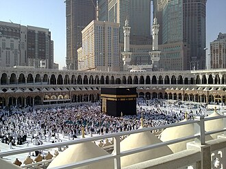
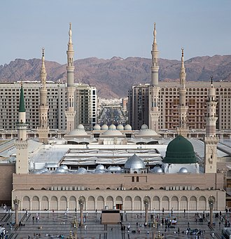
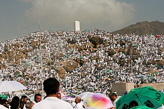
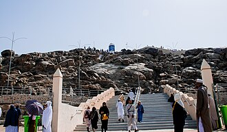
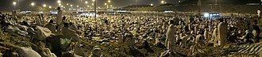
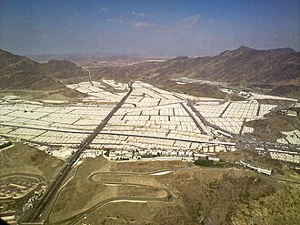
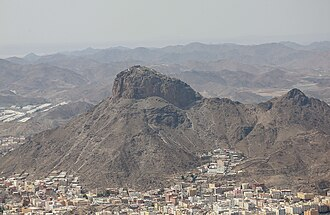
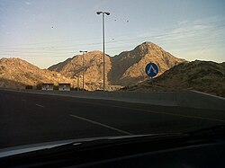

أماكن مهمة

أقدس بقعة على وجه الأرض ويضم الكعبة المشرفة وبئر زمزم والمسعى وسائر المشاعر.

ثاني أشرف المساجد وفيه قبر النبي ﷺ والروضة الشريفة في المدينة المنورة.

ركن الحج الأعظم؛ يقف الحجاج فيه يوم التاسع من ذي الحجة ليسأل كل منهم ربه.

يقع في قلب عرفات وفيه وقف النبي ﷺ وخطب خطبة الوداع أمام الصحابة الكرام.

يبيت فيها الحجاج ليلة العيد ويجمعون الحصى للرمي ويؤدون صلاتي المغرب والعشاء.

موضع رمي الجمرات والذبح والحلق وتُعدّ من أهم مشاعر الحج الكبرى.

يضم غار حراء الذي تلقّى فيه النبي ﷺ أولى آيات القرآن الكريم.

فيه الغار الذي لجأ إليه النبي ﷺ وصاحبه أبو بكر الصديق أثناء الهجرة النبوية.
أبرز شعائر الحج
إرشادات للحجاج والمعتمرين